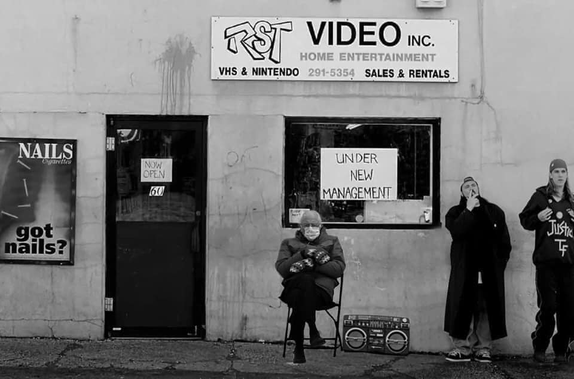

| Week | Date | Assignments |
|---|---|---|
| 1 | Aug. 31 | Form/Content and Rhetoric |
| 2 | Sept. 7 | Digiality, Interfaces, Ideologies |
| 3 | Sept. 14 | Audience(s) |
| 4 | Sept. 21 | Situations, Ecologies, Velocity |
| 5 | Sept. 28 | Update Culture; Templates and Afterlife |
| 6 | Oct. 5 |
Update Culture; Interface and Ideology Annotated bibliography due |
| 7 | Oct. 12 | TBD |
| 8 | Oct. 19 | Circulation, Writing, Rhetoric 1 |
| 9 | Oct. 26 | Circulation, Writing, Rhetoric 2 |
| 10 | Nov. 2 | Circulation, Writing, Rhetoric 3 |
| 11 | Nov. 9 |
Ethics of Circulation and Digital Activisms Friday, November 10, 2023 is the last day you can drop the course |
| 12 | Nov. 16 |
Ethics of Circulation and Digiital Activisms Digital Project due |
| 13 | Nov. 23 | Thanksgiving. Contemplate the rhetorical velocity of simple carbohydrates |
| 14 | Nov. 30 | Ethics of Circulation and Digital Activisms |
| 15 | Dec. 7 | TBD |
| FINAL | Dec. ? |
Present results of online presence project Presentations for Online Presence project |

Guiding questions for the course
- How can we characterize relationships between form and content?
- What relationships do writers, institutions, and audiences have to texts in circulation, particularly on social platforms and the web?
- How does discourse circulate to achieve goals? Whose goals?
- What happens when discourse is on the go?
- What roles do templates, interfaces, platforms, and other technologies play in digital composition?
- How can we—or can we in the first place—anticipate updates, circulation, and delivery as components of rhetorical situations and ecologies?
- How might we use rhetorical theory to inform practice, advocacy, and critique in a digitally circulating world?